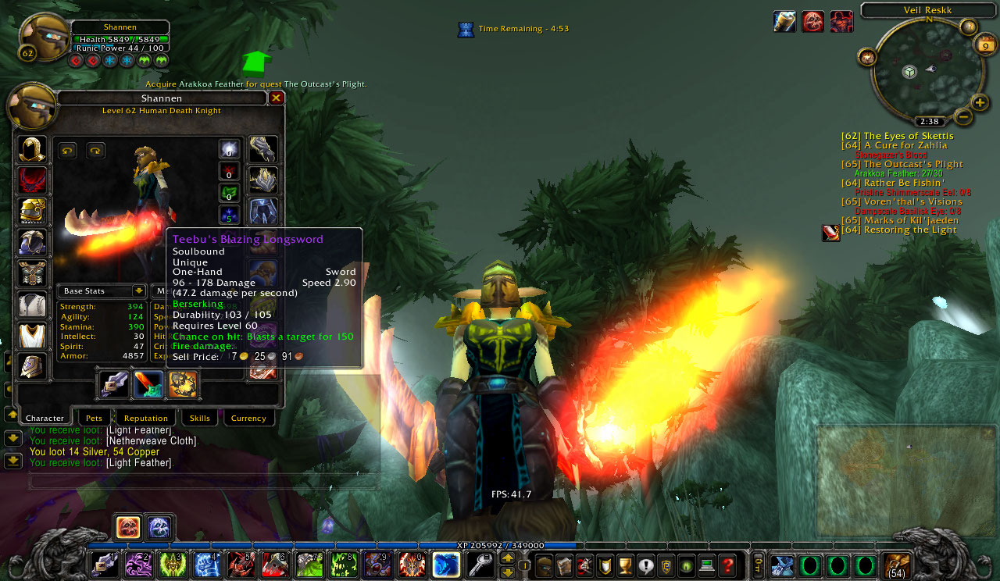

This weapon is one of the best pre-raid Main-hand weapons you can get both for warriors and rogues.
Combined with amazing base DPS, this weapon has 2.90 weapon speed,aswell as good on-hit chance proc!
Extremly slow weapon speed makes it scale very good with Rogue's Sinister Strike skill. But for Warriors slow Main hand means more off hand strikes while Heroic Strike is queued.
There is one down side to this weapon. And it's that this weapon is random World Drop epic. Which makes it very hard to farm, and can be very expensive.
In conclusion, if you can get this weapon,great! But I would rather reccomend Felstriker or rather Dal'Rends duo.